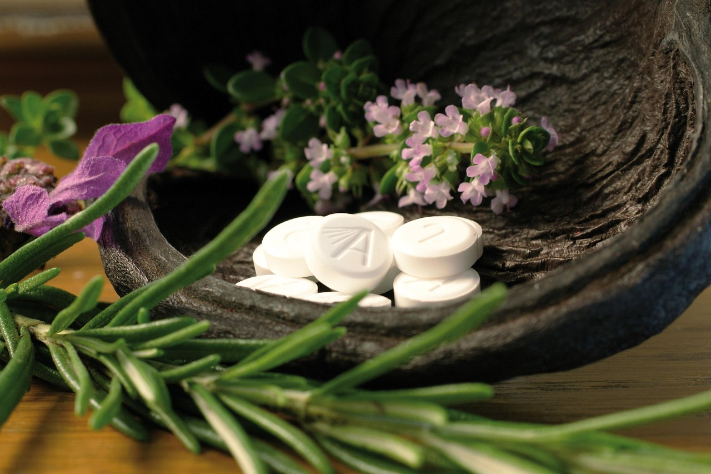
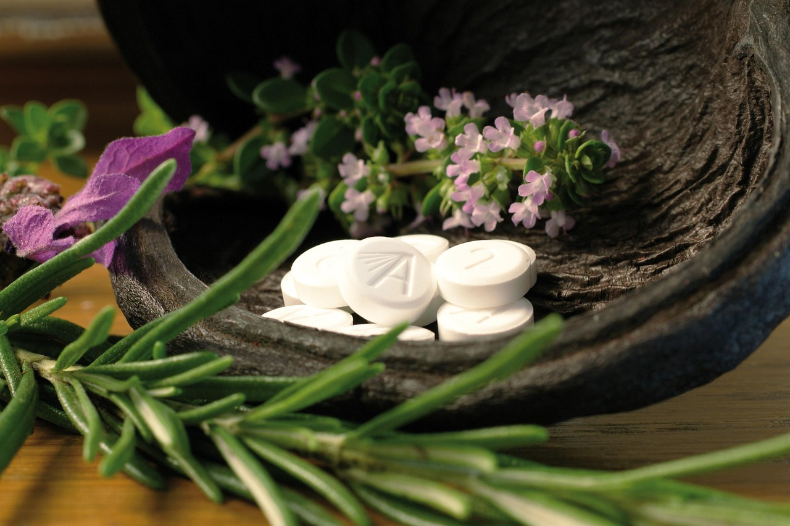

DR V - SCIATICA
I thought Homeopathic medicines act slowly,I was amazed to have immediate relief in my sciatic pain soon after taking first dose.Thank you Hima for offering online consultations, it's so convenient.
 

We believe that health is not just the absence of disease, but a state of complete physical, mental, and social well-being. Let us help you achieve it. We work towards raising your health levels and enhance your overall wellbeing- physical, mental and emotional. No two individuals are exactly alike: that's why we offer personalized care that is unique & right for you through advanced top-notch genetic Constitutional Homeopathic modules and health counsels. We are dedicated to helping you achieve your health goals and improve your quality of life.
We pride in providing top-notch holistic personalized care. With over two decades of Homeopathic clinical expertise our internationally certified Professional Homeopaths have been striving hard in promoting overall health & well-being of our clients. We stay up-to-date with the latest research & advances in the field of Homeopathy which enables us in delivering the highest quality care you deserve. We provide homeopathic consultations for all kinds of ailments, acute & chronic, to all age groups. We not only focus on health management but also preventive care as well.
We believe in a personalized approach to healthcare, taking the time to listen to your concerns and develop a customized health plan that meets your unique needs. We work with you every step of the way to help you achieve your health & wellness goals.
Our digital services makes it easy to access for everyone from anywhere thus saving your time & effort. We strive hard not only to restore your health and maintain it but also provide preventive care, as well as wellness programs to support your overall health and well-being.
Be Healthy with Homeopathy !!
With over two decades of clinical expertise our Professional Homeopaths work towards promoting health & overall wellbeing - physical, mental & emotional wellbeing through Advanced Constitutional Homeopathic approaches. We work with all age groups for all kinds of Acute & Chronic Diseases!
Whether you want to eat healthy or stay fit or boost immunity or loose weight or just need lifestyle modifications. We do it all. We provide health, nutrition & wellness counsels, group and one-on-one guided mindfulness meditation sessions & Wellness workshops.
Looking for stress relief/ motivation or just revitalization? Join us and experience the soothing effects of art and blow off your stress & anxieties and get relaxed instantly.We offer guided personalized therapeutic art group and one-on-one sessions. We are here to help you find your inner peace.
I thought Homeopathic medicines act slowly,I was amazed to have immediate relief in my sciatic pain soon after taking first dose.Thank you Hima for offering online consultations, it's so convenient.
It’s grateful consulting Hima Bindu ma’am, as my daughter was faced severe menstrual issues like pain, irregularity since 2 yrs but after her homeopathic course she is now good. Thank you Hima Bindu.
My long standing gastric issues have been resolved within months now I can eat everything without discomfort. Thank you Hima mam for your advanced holistic homeopathic approaches & timely care
My long standing gastric issues have been resolved within months now I can eat everything without discomfort. Thank you Hima mam for your advanced holistic homeopathic approaches & timely care
I have reversed my diabetes within 6 months with Hima's homeopathic care & counsels. Thank you ji from your support , time & care. I found your personalized diabetes management plans very effective.S
I had developed dry cough suddenly & it was diagnosed as Bronchitis. I took many medicines but nothing worked. After taking only one dose of homeopathy my cough was down by 80% . Thank you Hima Garu.My long standing gastric issues have been resolved within months now I can eat everything without discomfort. Thank you Hima mam for your advanced holistic homeopathic approaches & timely care
I have reversed my diabetes within 6 months with Hima's homeopathic care & counsels. Thank you ji from your support , time & care. I found your personalized diabetes management plans very effective.
I got no real help from my Primary Care or two Dermatologist for my skin condition.I researched homeopathy and found Hima, had a zoom call with her & took homeopathy. I got better in a few days.
I had excruciating pain that came on suddenly, I couldn't even sit & nothing worked. My pain vanished instantly after taking a single dose of homeopathy. Now I am reffering homeopathy especially Hima to everyone. THANK YOU SO MUCH Hima Garu.
Homeopathic Radiance offers a variety of health services including regular check-ups, homeopathic consultations, wellness counsels, motivational sessions, meditation sessions & therapeutic art workshops.
Yes, Homeopathic medicines can be taken while taking other medications as Homeopathy is a complementary system of medicine
Monday to Friday: 10 am to 6 pm [EST]
6:30 am to 8 am & 6 pm to 9 pm[IST, Indian standard time]
-
Saturday & Sunday: 10 am to 2 pm [EST]
6 pm to 9 pm [IST]
Our mission is to provide easily accessible services henceforth we offer online consultations. Schedule your appointments at your convince from anywhere and avail virtual, voice/ video call consultations. Our online consultations are safe & secure ensuring privacy & confidentiality.
As a Complimentary, Classical Homeopath consultant, I am not licensed, certified or registered by the state as a health care professional nor am I subject to such licensure, certification or registration by the state. I do not diagnose, treat or prescribe medicines for the treatment of disease. This website is not intended to provide medical advice or to practice medicine. It is not a replacement for treatment by a licensed healthcare provider.